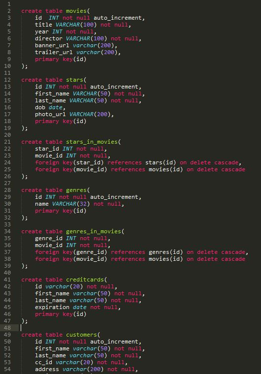
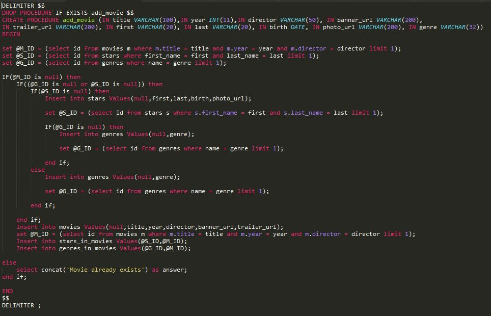
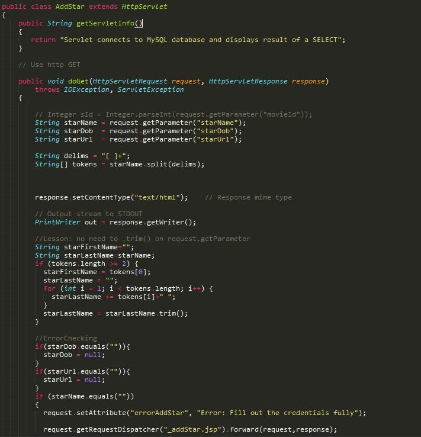

Making a webpage with databases The project involved making a movie search page and getting all the data from a database using SQL code. I had to first off make a series of tables for the data to use and input that to create a new database. Then I would load it with content that was already given to me beforehand. Figuring out what dependencies each table has was thought provoking as messing up dependencies would cause major issues later. Here is an example of it:

From there I had to make a function in SQL that is called a Procedure. It was rocky for me to do since this was the first time I have ever made a Procedure. I ran into a lot of errors for hours trying to debug any errors I have gotten while doing it. This resulted in me making several dummy databases to see if it was working properly. After getting it correctly, I learned how tough making them but it was rewarding to experiment with it. Here is what I wrote:

After that, my group had to write some java pages that act as servlets that would call the database through SQL and return us something that we wanted. Example of the page.
